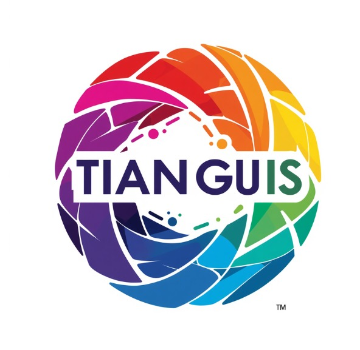

Alcaldía Miguel Hidalgo · CDMX
Desarrollar una simulación de la infraestructura de drenaje y el crecimiento poblacional, dirigida a la alcaldía Miguel Hidalgo, CDMX, limitada a esta demarcación, con el fin de prevenir inundaciones. Este es el objetivo que guía a Intracode: no construimos un sistema genérico de monitoreo, sino una herramienta pensada específicamente para las condiciones, la infraestructura y el crecimiento urbano de Miguel Hidalgo.
Somos un equipo de desarrollo que combina análisis de datos, diseño de interfaces y programación para convertir información de infraestructura urbana en decisiones concretas. Trabajamos desde la perspectiva del ciudadano afectado por inundaciones: alguien que vive las consecuencias cuando el drenaje no da abasto y necesita que las autoridades puedan anticiparse, no solo reaccionar.
Nuestro enfoque parte de una idea simple: la infraestructura de drenaje se diseñó para una población y un crecimiento urbano determinados, y cuando esas condiciones cambian, el sistema puede quedarse corto. Por eso construimos herramientas que cruzan ambos factores —infraestructura existente y crecimiento poblacional— para detectar esos desajustes antes de que se conviertan en una inundación.
El proyecto
El proyecto simula la infraestructura de drenaje junto con el crecimiento poblacional, para detectar con anticipación qué zonas podrían saturarse e inundarse. Partimos de datos reales de la red de tuberías —su capacidad, antigüedad y la zona que cubre cada tramo— y los cruzamos contra proyecciones de crecimiento de la población en la alcaldía Miguel Hidalgo.
El sistema se organiza en tres módulos principales. Primero, el ingreso de infraestructura: se registra la red de drenaje existente, con su capacidad y estado actual. Segundo, la simulación de crecimiento: se modela cómo aumentará la población en distintas zonas y qué presión adicional representará eso sobre las tuberías. Tercero, la visualización de riesgo: el sistema señala con anticipación los puntos donde la red podría saturarse primero, para que la alcaldía pueda actuar antes de la siguiente temporada de lluvias.
No se trata solo de registrar cómo está el drenaje hoy, sino de proyectar cómo va a comportarse conforme crece la ciudad. Esa es la diferencia entre reaccionar a una inundación ya ocurrida y prevenirla con datos.
Casos de éxito

Sistema de gestión para mercados ambulantes (tianguis), con mapa visual de puestos y asignación automática de ubicaciones. Controla vendedores, usuarios, categorías y reseñas, aplicando reglas de negocio como el límite de puestos por cuadra y la relación uno a uno entre puesto, vendedor y ubicación. Nos sirvió como base para construir el mismo tipo de lógica que hoy aplicamos al drenaje: cruzar infraestructura limitada con la demanda real de quienes la usan.
Contacto
Cargo: Jefe de equipo
Correo: claudio@intracode.mx
Teléfono: 55 0000 0001
Cargo: Analista
Correo: cesar@intracode.mx
Teléfono: 55 0000 0002
Cargo: Diseñador
Correo: enrique@intracode.mx
Teléfono: 55 0000 0003
Cargo: Diseñador
Correo: melani@intracode.mx
Teléfono: 55 0000 0004
Cargo: Programador
Correo: atreyu@intracode.mx
Teléfono: 55 0000 0005